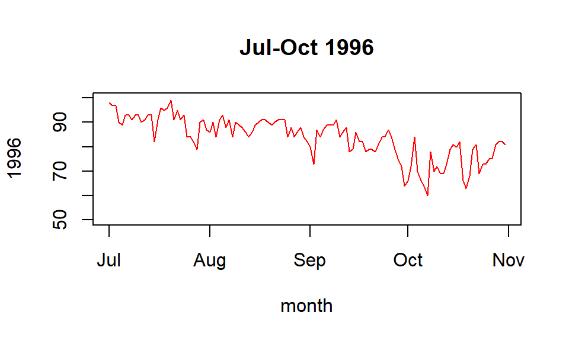
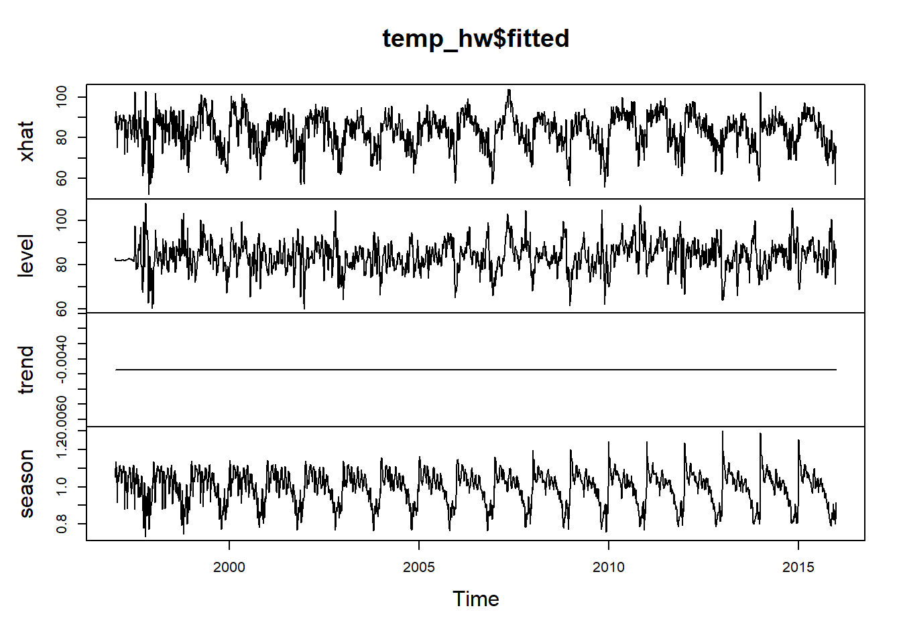
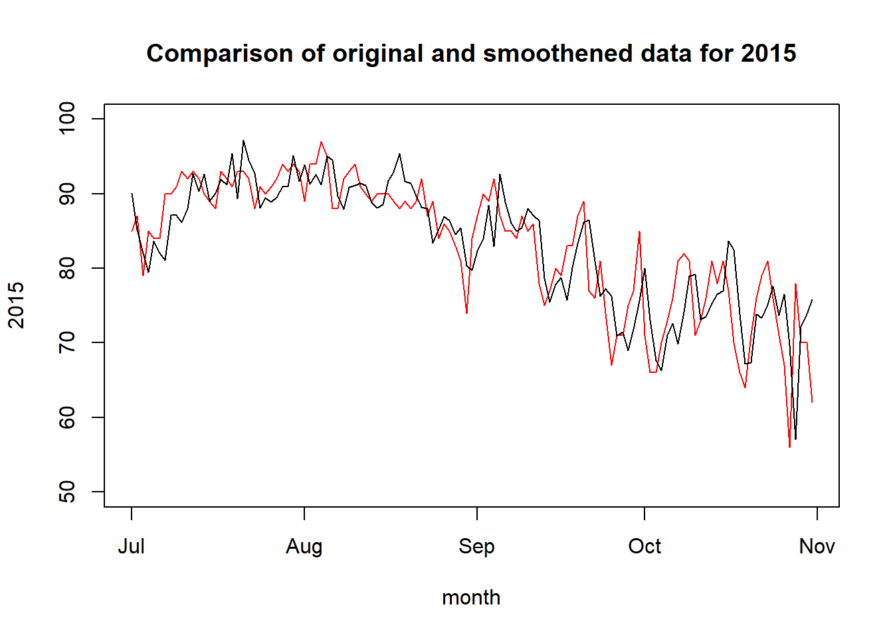
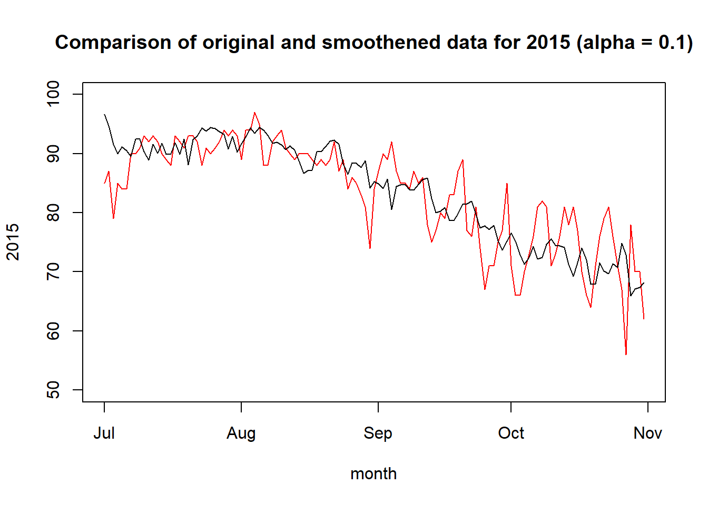
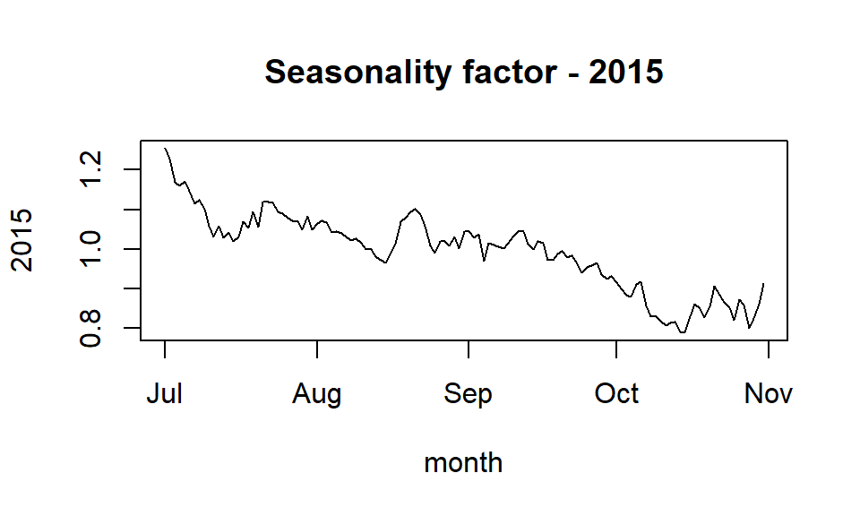

Exponential Smoothing
Exponential is a time-series forecasting method whereby each prediction in time period t+1 is a weighted sum of past observations. For the model, there is an exponentially decreasing weight for past observations, i.e. the most recent observation has the highest weightage.
Thus, exponential smoothing is typically used for short-term forecasts instead of long-term.
In this exercise, we will use temperature data from one of the cities in US and use exponential smoothing combined with CUSUM to explore if the end of summer has gotten later over the years.
Building exponential smoothing model
Let’s start by loading the dataset.
data_temp <- read.table('temps.txt',header=TRUE)The dataset has daily temperature values for Year 1996 - Year 2015. Let’s look at the first five rows of the data.
head(data_temp)## DAY X1996 X1997 X1998 X1999 X2000 X2001 X2002 X2003 X2004 X2005 X2006 X2007
## 1 1-Jul 98 86 91 84 89 84 90 73 82 91 93 95
## 2 2-Jul 97 90 88 82 91 87 90 81 81 89 93 85
## 3 3-Jul 97 93 91 87 93 87 87 87 86 86 93 82
## 4 4-Jul 90 91 91 88 95 84 89 86 88 86 91 86
## 5 5-Jul 89 84 91 90 96 86 93 80 90 89 90 88
## 6 6-Jul 93 84 89 91 96 87 93 84 90 82 81 87
## X2008 X2009 X2010 X2011 X2012 X2013 X2014 X2015
## 1 85 95 87 92 105 82 90 85
## 2 87 90 84 94 93 85 93 87
## 3 91 89 83 95 99 76 87 79
## 4 90 91 85 92 98 77 84 85
## 5 88 80 88 90 100 83 86 84
## 6 82 87 89 90 98 83 87 84To get a quick overview of how the data for each year looks like, let’s take a look at the graph of year 1996.
month <- seq(as.Date("1996-7-1"), as.Date("1996-10-31"), by="days")
plot(month,data_temp[,"X1996"],type="l",col="red",ylim=c(50,100),ylab="1996")
title("Jul-Oct 1996")
There are a lot of spikes and dips that creates noise.
Let’s prepare the data and pass it into the HoltWinters function to conduct exponential smoothing.The idea is to remove random drops or highs in the temperature.
We will have to convert the data to a time-series vector for use in the HoltWinters function. Here, we create a vector by concatenating all the columns, and exclude the first column.
# convert to vector for use in ts() function
temp_vec <- as.vector(unlist(data_temp[,-1])) # exclude first column of datesIn this dataset, there are 123 data points in each year. So we can use the ts() function to create a time-series and use frequency of 123 so that at point 124, it will be the next year.
# attach time series
temp_vec <- ts(temp_vec, frequency=123, start=c(1996, 1))Now, we are ready to use the vector as input to HoltWinters model.
# Pass in NULL for the parameters to let the function calculate the parameters
# Set seasonal component to be multiplicative to account for the seasonal trends
temp_hw <- HoltWinters(temp_vec, alpha=NULL, beta=NULL, gamma=NULL, seasonal = "multiplicative")Let’s take a look at the model generated.
summary(temp_hw)## Length Class Mode
## fitted 9348 mts numeric
## x 2460 ts numeric
## alpha 1 -none- numeric
## beta 1 -none- numeric
## gamma 1 -none- numeric
## coefficients 125 -none- numeric
## seasonal 1 -none- character
## SSE 1 -none- numeric
## call 6 -none- callplot(temp_hw$fitted)
xhat is the predicted values, level output can be thought of as the single exponential smoothing, trend is basically telling us that this dataset is relatively flat and stable throughout the years, and season refers to the seasonality factor for each date.
Next, let’s explore two approaches to judge whether the unofficial end of summer has gotten later over the years.
Approach 1
I will use the smoothened data (xhat from temp_hw$fitted) and use CUSUM to determine a date that the weather starts cooling off. I will be taking the mean temperature for groups of 3 years. My rationale is that there shouldn’t be too much changes within 3 years, and taking the mean of each date for 3 years would give a good representation of the temperature changes for that time period.
Next, I will then review the end-summer-dates (I will have 6 data points) and review if this date has gotten later over the years.
# extracting the predicted data points based on application of exponential smoothing
xhat <- temp_hw$fitted[,1]Now, I have a time-series vector named xhat that contains all the values from 1997 to 2015. Note that 1996 does not have xhat values as it is used as the baseline.
Next, I want to reshape the vector back into the original data’s shape.
data_xhat <- data.frame((matrix(xhat, nrow=123)))
colnames(data_xhat) <- colnames(data_temp)[3:21]Let’s examine a plot for one of the years, and compare the original data vs the smoothened data
month <- seq(as.Date("2015-7-1"), as.Date("2015-10-31"), by="days")
plot(month,data_temp[,"X2015"],type="l",col="red",ylim=c(50,100),ylab="2015")
lines(month,data_xhat[,"X2015"],type="l",col="black",ylim=c(50,100),ylab="2015")
legend(95,95,legend=c("original","smoothened"),col=c("red","black"),lty=c(1,1),cex=0.7)
title("Comparison of original and smoothened data for 2015")
Based on the plot above, we can see that the smoothened plot (black) did smoothen out some of the sharp spikes in the original data (red).
Doing a quick check on the alpha used for the HoltWinters model:
temp_hw$alpha ## alpha
## 0.615003The alpha used is 0.615, which is relatively high. If we want to smoothen the graph further, we can use lower value of alpha, for example 0.1
Let’s take a look at the graph should we force the model to use 0.1 for alpha.

We can see that with a lower value of alpha, the smoothening effect is very obvious and a lot of the spikes and dips have been smoothened.
Next, using the CUSUM approach to determine an end-summer-date for the years. I used an Excel spreadsheet for the CUSUM exercise and the results are below.
For each 3-year-period, I used the CUSUM approach to determine a date that summer ends (cooling of temperature). The findings are tabluated below:
year_range <- c('1997-1999','2000-2002','2003-2005','2006-2008','2009-2011','2012-2015')
end_summer_date <- c('21-Sep', '2-Sep', '11-Sep','16-Sep','17-Sep','17-Sep')
data.frame(year_range,end_summer_date)## year_range end_summer_date
## 1 1997-1999 21-Sep
## 2 2000-2002 2-Sep
## 3 2003-2005 11-Sep
## 4 2006-2008 16-Sep
## 5 2009-2011 17-Sep
## 6 2012-2015 17-SepBased on approach 1, it can’t be concluded that the end of summer has gotten later over the years. Let’s try approach 2 and see what we get.
Approach 2 - using the seasonality factor
The seasonality factor (Ct) for the entire dataset is plotted in the fourth row in the plot below.
plot(temp_hw$fitted)
Each hump represents a year, and the overall shape makes sense since we use Jul-Sep for each year, and Ct is closely related to the Ct of the same month, previous year. Based on observation, the trend is similar, but we can see that each hump may have slight differences. Especially comparing the hump in 2015 - it looks very different from that in 2000.
Let’s reshape the data similar to Approach 1.
season <- temp_hw$fitted[,4]
data_season <- data.frame(matrix(season,nrow=123,byrow=FALSE))
colnames(data_season) <- colnames(data_temp)[3:21]
head(data_season)## X1997 X1998 X1999 X2000 X2001 X2002 X2003 X2004 X2005
## 1 1.052653 1.049468 1.120607 1.103336 1.118390 1.108172 1.140906 1.140574 1.125438
## 2 1.100742 1.099653 1.108025 1.098323 1.110184 1.116213 1.126827 1.154074 1.142187
## 3 1.135413 1.135420 1.139096 1.142831 1.143201 1.138495 1.129678 1.156092 1.165657
## 4 1.110338 1.110492 1.117079 1.125774 1.134539 1.126117 1.130758 1.137722 1.150639
## 5 1.025231 1.025233 1.044684 1.067291 1.084725 1.097239 1.115055 1.103877 1.120818
## 6 1.025838 1.025722 1.028169 1.042340 1.053954 1.067494 1.080203 1.094312 1.102680
## X2006 X2007 X2008 X2009 X2010 X2011 X2012 X2013 X2014
## 1 1.122063 1.161415 1.198102 1.198910 1.243012 1.243781 1.238435 1.300204 1.290647
## 2 1.131889 1.144549 1.134661 1.153433 1.165431 1.172935 1.190735 1.191956 1.219190
## 3 1.147982 1.149459 1.135756 1.153310 1.155197 1.157286 1.169773 1.189915 1.172309
## 4 1.146992 1.142497 1.150162 1.151169 1.157751 1.163844 1.159343 1.166605 1.167993
## 5 1.133733 1.132167 1.142714 1.139244 1.112909 1.132435 1.132045 1.145230 1.168161
## 6 1.092178 1.075766 1.088547 1.082185 1.103092 1.115071 1.118575 1.121598 1.134962
## X2015
## 1 1.254521
## 2 1.228826
## 3 1.169045
## 4 1.158956
## 5 1.170449
## 6 1.145475For each hump, there is a “dip”. We can investigate if the “dip” is being delayed as the years go by. For example, in 2015 (plot below), the dip is around mid-Sep by observation.
month <- seq(as.Date("2015-7-1"), as.Date("2015-10-31"), by="days")
plot(month,data_season[,"X2015"],type="l",col="black",ylab="2015")
title("Seasonality factor - 2015")
Next, I will use CUSUM to determine an end-summer-date for the years, which is where the “dip” in the data happens. Again, I used an Excel spreadsheet for the CUSUM exercise and the results are below.
year_range <- c('1997-1999','2000-2002','2003-2005','2006-2008','2009-2011','2012-2015')
end_summer_date <- c('18-Sep', '15-Sep', '15-Sep','6-Sep','4-Sep','4-Sep')
data.frame(year_range,end_summer_date)## year_range end_summer_date
## 1 1997-1999 18-Sep
## 2 2000-2002 15-Sep
## 3 2003-2005 15-Sep
## 4 2006-2008 6-Sep
## 5 2009-2011 4-Sep
## 6 2012-2015 4-SepBased on this, it is also not conclusive that summer is ending later over the years. More data needs to be collected over more years so we can make better sense of the data.